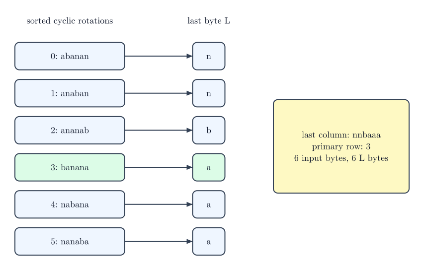
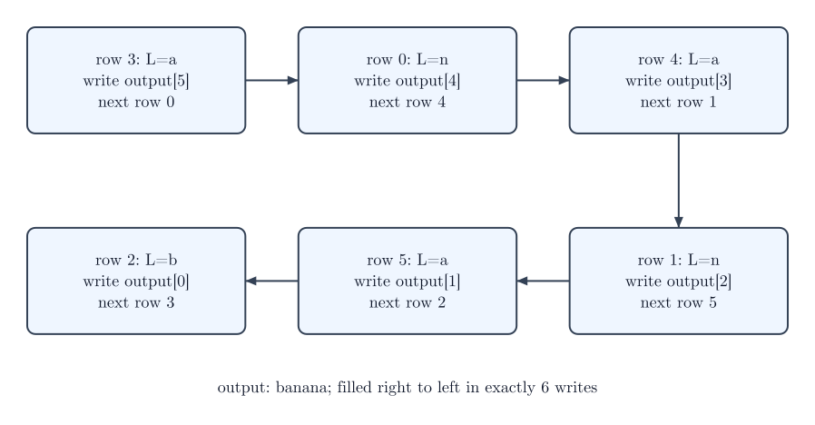
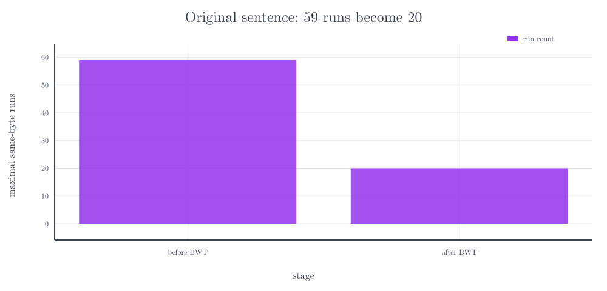
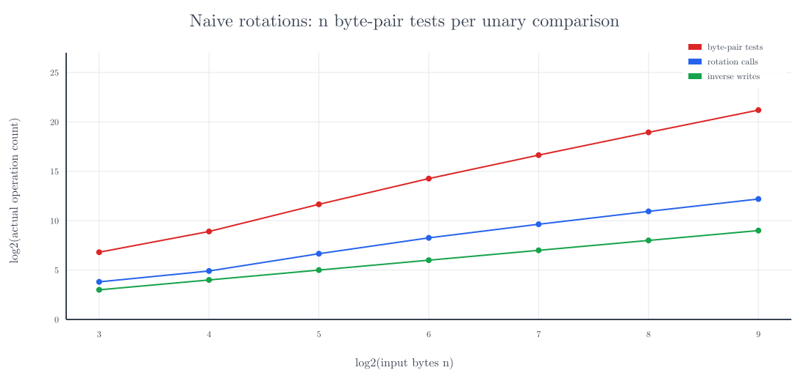

Burrows–Wheeler: A Reversible Byte Permutation
Abstract
Sorting cyclic rotations turns banana into the last column nnbaaa, with primary row three. Those bytes and that index recover the original without a sentinel. We retain this example and the original 59-byte repeated sentence, using native C++ records for sorted starts, LF occurrences, inverse writes and actual forward comparison work. The conversion fixes inconsistent signed-byte ordering and checks invalid primary indices. Run measurements show both clustering and a counterexample: aabb gains runs after transformation. BWT preserves byte counts and frequencies; downstream coding, rather than the permutation alone, provides compression.
Sort the cyclic rotations of banana
A row starts at an input offset and wraps around after the last byte. Sort all six rows in unsigned-byte lexicographic order, then keep their final bytes. The original rotation starts at offset zero and occupies row three. No special terminator is appended, so the input length remains six.
#include <dm/dm.hpp>
int main() {
std::filesystem::create_directories("build");
const auto trace=dm::algorithms::bwt_transform_trace("banana");
if (trace.result.transformed!="nnbaaa" || trace.result.index!=3 || dm::algorithms::bwt_inverse(trace.result)!="banana") return 1;
dm::graphics::Diagram diagram(65,1100);
diagram.text({0,1.1},"sorted cyclic rotations",18).text({4.3,1.1},"last byte L",18);
std::print("| sorted row | original start | displayed cyclic rotation | last byte | original row |\n"
"| ---: | ---: | :--- | :--- | :--- |\n");
for (std::size_t row=0;row<trace.rotation_starts.size();++row) {
const auto start=trace.rotation_starts[row];
const auto rotation=trace.input.substr(start)+trace.input.substr(0,start);
const double y=-1.15*static_cast<double>(row);
dm::graphics::DiagramNodeStyle style;style.width=3.4;style.height=.85;style.padding=7;
style.fill=row==trace.result.index?dm::RGB{220,252,231}:dm::RGB{239,246,255};
diagram.node(std::format("row{}",row),{0,y},std::format("{}: {}",row,rotation),style);
style.width=1.0;
diagram.node(std::format("last{}",row),{4.3,y},std::string(1,trace.result.transformed[row]),style)
.edge(std::format("row{}",row),std::format("last{}",row));
std::print("| {} | {} | {} | {} | {} |\n",row,start,rotation,trace.result.transformed[row],row==trace.result.index);
}
dm::graphics::DiagramNodeStyle summary;summary.width=4.2;summary.height=2.9;summary.fill={254,249,195};
diagram.node("pair",{8.4,-2.8},std::format("last column: {}\nprimary row: {}\n{} input bytes, {} L bytes",
trace.result.transformed,trace.result.index,trace.input.size(),trace.result.transformed.size()),summary)
.save_svg("build/bwt_rotations.svg");
std::print("\nActual sorted starts: {}. Inverse: {}.\n",trace.rotation_starts,dm::algorithms::bwt_inverse(trace.result));
}| sorted row | original start | displayed cyclic rotation | last byte | original row |
|---|---|---|---|---|
| 0 | 5 | abanan | n | false |
| 1 | 3 | anaban | n | false |
| 2 | 1 | ananab | b | false |
| 3 | 0 | banana | a | true |
| 4 | 4 | nabana | a | false |
| 5 | 2 | nanaba | a | false |
Actual sorted starts: [5, 3, 1, 0, 4, 2]. Inverse: banana.

The pair is (L,I)=(nnbaaa,3). Each last-column position comes from exactly one rotation start, so L is a permutation of the input bytes. Length and symbol frequencies are unchanged. The primary row is necessary because cyclic rotations share a last column; it selects which rotation to recover. Equal rotations are tied by increasing start offset, giving deterministic results and selecting the first row equal to the input.
The original [Burrows and Wheeler report](https://www.cs.jhu.edu/~langmea/resources/burrows_wheeler.pdf) describes this cyclic, primary-index convention. The library uses the same byte ordering in both directions, including zero and high-bit bytes. The previous forward comparator used signed char order on this platform while the inverse used unsigned order, breaking some binary round trips.
Stable occurrences define the LF mapping
The first column F is the sorted multiset of L. For a byte c, let C[c] count bytes strictly below c, and let rank(i) count earlier occurrences of L[i] in L, starting at zero. The native mapping is
This pairs each occurrence in L with the same occurrence in F. Within a fixed byte group, moving the last byte to the front preserves the order of the remaining context. Thus LF identifies a cyclic predecessor row's content. With duplicate rotations, its chosen row need not have the literal predecessor's original start offset; equal row contents suffice.
Starting from I, read L at the current row, write the output from right to left, and follow LF. Perform exactly n writes. For banana, the actual row sequence is 3,0,4,1,5,2 and the written bytes are a,n,a,n,a,b.
#include <dm/dm.hpp>
int main() {
std::filesystem::create_directories("build");
const auto trace=dm::algorithms::bwt_inverse_trace(dm::algorithms::bwt_transform("banana"));
std::print("| row | L byte | earlier equal occurrences | C[L] | LF(row) | F at row |\n"
"| ---: | :--- | ---: | ---: | ---: | :--- |\n");
for (std::size_t row=0;row<trace.input.transformed.size();++row) {
const auto value=static_cast<unsigned char>(trace.input.transformed[row]);
std::print("| {} | {} | {} | {} | {} | {} |\n",row,static_cast<char>(value),trace.mapping.occurrence_rank[row],
trace.mapping.starts[value],trace.mapping.lf[row],trace.mapping.first_column[row]);
}
std::print("\n| actual step | current row | read byte | output position | next LF row |\n"
"| ---: | ---: | :--- | ---: | ---: |\n");
const std::vector<dm::graphics::DiagramPoint> positions{{0,0},{4.6,0},{9.2,0},{9.2,-3.4},{4.6,-3.4},{0,-3.4}};
dm::graphics::Diagram diagram(65,1100);
dm::graphics::DiagramNodeStyle style;style.width=3.7;style.height=1.8;
for (std::size_t k=0;k<trace.steps.size();++k) {
const auto& step=trace.steps[k];
diagram.node(std::format("step{}",k),positions[k],std::format("row {}: L={}\nwrite output[{}]\nnext row {}",
step.row,static_cast<char>(step.value),step.output_index,step.next_row),style);
if (k) diagram.edge(std::format("step{}",k-1),std::format("step{}",k));
std::print("| {} | {} | {} | {} | {} |\n",k,step.row,static_cast<char>(step.value),step.output_index,step.next_row);
}
diagram.text({4.6,-5.2},std::format("output: {}; filled right to left in exactly {} writes",trace.output,trace.steps.size()),18)
.save_svg("build/bwt_lf_walk.svg");
if (trace.output!="banana" || trace.steps.size()!=6) return 1;
std::print("\nLF: {}. Reconstructed: {}.\n",trace.mapping.lf,trace.output);
}| row | L byte | earlier equal occurrences | C[L] | LF(row) | F at row |
|---|---|---|---|---|---|
| 0 | n | 0 | 4 | 4 | a |
| 1 | n | 1 | 4 | 5 | a |
| 2 | b | 0 | 3 | 3 | a |
| 3 | a | 0 | 0 | 0 | b |
| 4 | a | 1 | 0 | 1 | n |
| 5 | a | 2 | 0 | 2 | n |
| actual step | current row | read byte | output position | next LF row |
|---|---|---|---|---|
| 0 | 3 | a | 5 | 0 |
| 1 | 0 | n | 4 | 4 |
| 2 | 4 | a | 3 | 1 |
| 3 | 1 | n | 2 | 5 |
| 4 | 5 | a | 1 | 2 |
| 5 | 2 | b | 0 | 3 |
LF: [4, 5, 3, 0, 1, 2]. Reconstructed: banana.

Stable byte groups occupy disjoint contiguous intervals of F, so LF is a permutation of row ids. A single LF cycle is not required. For example, abab has equal rotations and an LF walk of period two, but reconstructing all four bytes requires four writes. A constant string has an identity LF permutation: the selected row repeats at every step. Stopping at the first repeated row would lose most of either string.
Original sentence: fewer runs, unchanged bytes
Keep the original 59-byte input: the quick brown fox repeated three times, with spaces between copies. A run means a maximal nonempty stretch of one byte. Fewer runs at the same length means longer average runs, n/R. The previous comments claiming that more such runs help this example had the direction reversed.
The report reuses native run-length and move-to-front APIs. It does not reimplement their algorithms. Each MTF output is an alphabet position; there are still n positions, without a serialized compressed-size claim.
#include <dm/dm.hpp>
int main() {
std::filesystem::create_directories("build");
const std::string text="the quick brown fox the quick brown fox the quick brown fox";
const auto transformed=dm::algorithms::bwt_transform(text);
const auto before=dm::algorithms::rle_encode(text);
const auto after=dm::algorithms::rle_encode(transformed.transformed);
std::print("| input | input bytes | last-column bytes | runs before | runs after BWT | MTF zeros before | MTF zeros after | round trip |\n"
"| :--- | ---: | ---: | ---: | ---: | ---: | ---: | :--- |\n");
for (const auto& [name,input]:std::vector<std::pair<std::string,std::string>>{
{"original sentence",text},{"banana","banana"},{"aabb counterexample","aabb"},{"constant","aaaa"}}) {
const auto encoded=dm::algorithms::bwt_transform(input);
const auto original_runs=dm::algorithms::rle_encode(input).size();
const auto transformed_runs=dm::algorithms::rle_encode(encoded.transformed).size();
const auto original_mtf=dm::algorithms::mtf_encode(input);
const auto transformed_mtf=dm::algorithms::mtf_encode(encoded.transformed);
const auto zero_before=std::count(original_mtf.begin(),original_mtf.end(),0);
const auto zero_after=std::count(transformed_mtf.begin(),transformed_mtf.end(),0);
const bool round_trip=dm::algorithms::bwt_inverse(encoded)==input;
if (!round_trip || encoded.transformed.size()!=input.size() ||
zero_before!=static_cast<std::ptrdiff_t>(input.size()-original_runs) ||
zero_after!=static_cast<std::ptrdiff_t>(input.size()-transformed_runs)) return 1;
std::print("| {} | {} | {} | {} | {} | {} | {} | {} |\n",name,input.size(),encoded.transformed.size(),
original_runs,transformed_runs,zero_before,zero_after,round_trip);
}
if (text.size()!=59 || before.size()!=59 || after.size()!=20) return 1;
dm::graphics::RPlot::barplot({static_cast<double>(before.size()),static_cast<double>(after.size())},
{"before BWT","after BWT"},"run count",dm::RGB{147,51,234})
.title("Original sentence: 59 runs become 20")
.x_label("stage").y_label("maximal same-byte runs").size(1000,480)
.save_svg("build/bwt_runs.svg");
std::print("\nOriginal sentence mean run lengths: {:.2f} before, {:.2f} after. Run records are not serialized bytes.\n",
static_cast<double>(text.size())/before.size(),static_cast<double>(text.size())/after.size());
}| input | input bytes | last-column bytes | runs before | runs after BWT | MTF zeros before | MTF zeros after | round trip |
|---|---|---|---|---|---|---|---|
| original sentence | 59 | 59 | 59 | 20 | 0 | 39 | true |
| banana | 6 | 6 | 6 | 3 | 0 | 3 | true |
| aabb counterexample | 4 | 4 | 2 | 4 | 2 | 0 | true |
| constant | 4 | 4 | 1 | 1 | 3 | 3 | true |
Original sentence mean run lengths: 1.00 before, 2.95 after. Run records are not serialized bytes.

Sorting rows places related following contexts together, collecting their preceding bytes in L. That can help a local coder exploit context-dependent regularity. It does not reduce zero-order empirical entropy: every byte frequency p_c is preserved, so minus-sum p_c log2(p_c) is unchanged. A run-count change is therefore not a byte-frequency compression ratio.
After a byte is MTF-encoded, it becomes the alphabet's front element. Every later identical adjacent byte consequently has rank zero. For the native initial alphabet zero through 255, a byte string with n bytes and R runs has
zero-valued MTF positions. All displayed text cases start with a nonzero byte, so Z=n-R. The sentence gains 39 zero positions after BWT. Counting those positions illustrates what a later zero-run coder might exploit; it does not implement that coder or establish a final compressed size.
BWT is used in [bzip2](https://sourceware.org/bzip2/manual/manual.html), whose format includes additional coding, metadata and integrity machinery. These native cyclic-transform pairs and MTF vectors are not bzip2 files, and the report does not claim to reproduce its complete pipeline.
Actual forward comparison work and linear inverse writes
The core stores rotation starts rather than full strings, but each naive comparison may inspect n byte pairs. Let C(n) be the actual number of std::sort comparator calls and B(n) the number of inspected byte pairs. For a constant input every comparison sees n equal bytes, then uses the start-offset tie break. Therefore B(n)=n*C(n) exactly for this family. The resulting worst-case upper bound is O(n^2 log(n+1)) time and O(n) auxiliary storage. Sorting-call counts are toolchain-dependent; the report measures them instead of assigning a universal exact formula.
LF construction counts a fixed 256-byte alphabet and visits n positions. The inverse then performs exactly n writes, giving O(n+256) time and storage. Tracing adds owned provenance and write records, still linear storage; normal APIs do not allocate those records. It is not necessary to build or retain an n-by-n rotation matrix for either core operation.
#include <dm/dm.hpp>
int main() {
std::filesystem::create_directories("build");
std::vector<double> x,calls,byte_pairs,writes;
std::print("| unary input bytes n | actual rotation comparisons C | actual byte-pair tests B | checked n*C | full-equality comparisons | inverse writes |\n"
"| ---: | ---: | ---: | ---: | ---: | ---: |\n");
for (const std::size_t n:{8,16,32,64,128,256,512}) {
const auto forward=dm::algorithms::bwt_transform_trace(std::string(n,'a'));
const auto inverse=dm::algorithms::bwt_inverse_trace(forward.result);
if (forward.byte_comparisons!=n*forward.rotation_comparisons ||
forward.equal_rotation_comparisons!=forward.rotation_comparisons || inverse.steps.size()!=n ||
inverse.output!=forward.input) return 1;
std::print("| {} | {} | {} | {} | {} | {} |\n",n,forward.rotation_comparisons,forward.byte_comparisons,
n*forward.rotation_comparisons,forward.equal_rotation_comparisons,inverse.steps.size());
x.push_back(std::log2(static_cast<double>(n)));
calls.push_back(std::log2(static_cast<double>(forward.rotation_comparisons)));
byte_pairs.push_back(std::log2(static_cast<double>(forward.byte_comparisons)));
writes.push_back(std::log2(static_cast<double>(inverse.steps.size())));
}
dm::graphics::RPlot::create()
.lines(x,byte_pairs,"byte-pair tests",dm::RGB{220,38,38},2).points(x,byte_pairs,"",dm::RGB{220,38,38},4)
.lines(x,calls,"rotation calls",dm::RGB{37,99,235},2).points(x,calls,"",dm::RGB{37,99,235},4)
.lines(x,writes,"inverse writes",dm::RGB{22,163,74},2).points(x,writes,"",dm::RGB{22,163,74},4)
.title("Naive rotations: n byte-pair tests per unary comparison")
.x_label("log2(input bytes n)").y_label("log2(actual operation count)").y_limits(0,27)
.size(1100,520).save_svg("build/bwt_comparison_work.svg");
}| unary input bytes n | actual rotation comparisons C | actual byte-pair tests B | checked n*C | full-equality comparisons | inverse writes |
|---|---|---|---|---|---|
| 8 | 14 | 112 | 112 | 14 | 8 |
| 16 | 30 | 480 | 480 | 30 | 16 |
| 32 | 101 | 3232 | 3232 | 101 | 32 |
| 64 | 307 | 19648 | 19648 | 307 | 64 |
| 128 | 797 | 102016 | 102016 | 797 | 128 |
| 256 | 1967 | 503552 | 503552 | 1967 | 256 |
| 512 | 4689 | 2400768 | 2400768 | 4689 | 512 |

Periodicity, binary bytes, malformed indices and budgets
An LF permutation alone does not certify that an arbitrary pair belongs to the cyclic-transform image. The inverse validates the primary index before allocation or indexing, but it is not a corruption detector. For example, the in-range pair (ab,0) decodes deterministically to aa; transforming aa produces a different last column. A stricter validator would need additional semantic checks and is not silently implied by range validation.
#include <dm/dm.hpp>
int main() {
std::string binary;for (unsigned int value:{0,128,255,0,255}) binary.push_back(static_cast<char>(value));
std::print("| case | bytes | primary row | LF permutation | inverse writes | round trip |\n"
"| :--- | ---: | ---: | :--- | ---: | :--- |\n");
for (const auto& [name,input]:std::vector<std::pair<std::string,std::string>>{
{"empty",""},{"singleton","x"},{"periodic abab","abab"},{"unary aaaa","aaaa"},{"binary 00 80 FF 00 FF",binary}}) {
const auto encoded=dm::algorithms::bwt_transform(input);
const auto decoded=dm::algorithms::bwt_inverse_trace(encoded);
const bool round_trip=decoded.output==input;
if (!round_trip || decoded.steps.size()!=input.size()) return 1;
std::print("| {} | {} | {} | {} | {} | {} |\n",name,input.size(),encoded.index,decoded.mapping.lf,decoded.steps.size(),round_trip);
}
const dm::algorithms::BWTResult unary{std::string(200000,'x'),0};
const auto large=dm::algorithms::bwt_inverse_trace(unary);
const bool repeats_zero=std::all_of(large.steps.begin(),large.steps.end(),[](const auto& step){return step.row==0;});
if (large.output!=unary.transformed || large.steps.size()!=200000 || !repeats_zero) return 1;
std::print("\nKnown unary encoding: {} bytes, {} actual writes; every visited row is zero: {}.\n",
unary.transformed.size(),large.steps.size(),repeats_zero);
bool invalid_empty=false,invalid_row=false,budget=false;
try {(void)dm::algorithms::bwt_inverse(dm::algorithms::BWTResult{"",1});}
catch (const std::invalid_argument&) {invalid_empty=true;}
try {(void)dm::algorithms::bwt_inverse_trace(dm::algorithms::BWTResult{"a",1});}
catch (const std::invalid_argument&) {invalid_row=true;}
dm::algorithms::BWTForwardOptions options;options.max_byte_comparisons=1;
try {(void)dm::algorithms::bwt_transform_trace("banana",options);}
catch (const std::runtime_error&) {budget=true;}
if (!invalid_empty || !invalid_row || !budget) return 1;
std::print("Invalid empty index, out-of-range row and one-byte-pair budget rejected: {}, {}, {}.\n",
invalid_empty,invalid_row,budget);
const dm::algorithms::BWTResult nonimage{"ab",0};
const auto arbitrary=dm::algorithms::bwt_inverse(nonimage);
std::print("In-range non-image pair (ab,0) decodes to {}; retransform reproduces supplied L: {}.\n",
arbitrary,dm::algorithms::bwt_transform(arbitrary).transformed==nonimage.transformed);
}| case | bytes | primary row | LF permutation | inverse writes | round trip |
|---|---|---|---|---|---|
| empty | 0 | 0 | [] | 0 | true |
| singleton | 1 | 0 | [0] | 1 | true |
| periodic abab | 4 | 0 | [2, 3, 0, 1] | 4 | true |
| unary aaaa | 4 | 0 | [0, 1, 2, 3] | 4 | true |
| binary 00 80 FF 00 FF | 5 | 0 | [3, 4, 0, 1, 2] | 5 | true |
Known unary encoding: 200000 bytes, 200000 actual writes; every visited row is zero: true. Invalid empty index, out-of-range row and one-byte-pair budget rejected: true, true, true. In-range non-image pair (ab,0) decodes to aa; retransform reproduces supplied L: false.
The 200,000-byte control constructs a known valid unary encoding directly; it does not run the deliberately naive forward transform on that large block. It verifies that an inverse walk can revisit one row 200,000 times and still produce the full output. For an empty pair, the canonical primary index is zero; default-constructed BWTResult now initializes it safely.
Forward trace budgets count actual inspected byte pairs and throw before an excess comparison, returning no partial result. Counts use size_t throughout; the inverse no longer narrows frequencies and cumulative offsets into int. The caller's input remains unchanged on success or exception.
Native checks use an independent materialized rotation matrix and a separate prepend-and-sort inverse on small inputs. All 9,841 strings over the byte alphabet {0,128,255} through length eight, all 256 byte values and 1,000 random binary/periodic inputs match the canonical transform and actual counters. Stable occurrence-pair sorting independently checks LF, while boundary indices, exact comparison budgets, periodic writes, run/MTF controls and existing compression/format tests cover the rest. This mechanism report uses explicit and generated byte blocks, without an artificial dataset requirement.
References
- M. Burrows and D. J. Wheeler (1994), [A Block-sorting Lossless Data Compression Algorithm](https://www.cs.jhu.edu/~langmea/resources/burrows_wheeler.pdf), Digital Systems Research Center Research Report 124, 10 May. Section 2 gives the cyclic last-column/primary-index transform and stable predecessor mapping.
- J. Seward, [bzip2 and libbzip2 manual](https://sourceware.org/bzip2/manual/manual.html), for the distinction between a block-sorting transform and the complete bzip2 compression format and library.